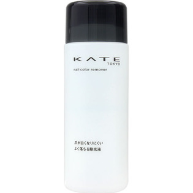

返回列表
产品名称：ケイトネイルカラーリムーバーＮ

カネボウ化粧品 ケイトネイルカラーリムーバーＮ ２３０ｍｌ
メーカー カネボウ化粧品
JANコード 4973167209325
商品の特徴
爪が白くなりにくいよく落ちる除光液
ネイルカラーをしっかり落として、ふきとったあと、爪が白くなりにくい除光液です。
液がたっぷり出せる口の広い容器を採用。
成分・分量
＜成分＞
アセトン、水、酢酸ブチル、PG
用法及び用量
＜使用方法＞
○コットンに適量をとり、爪をおさえるようにしてネイルカラーとなじませふき取ります。
○ラメやパールの入った落ちにくいネイルカラーの場合はリムーバーをしみこませたコットンをしばらく爪においてからふき取ります。